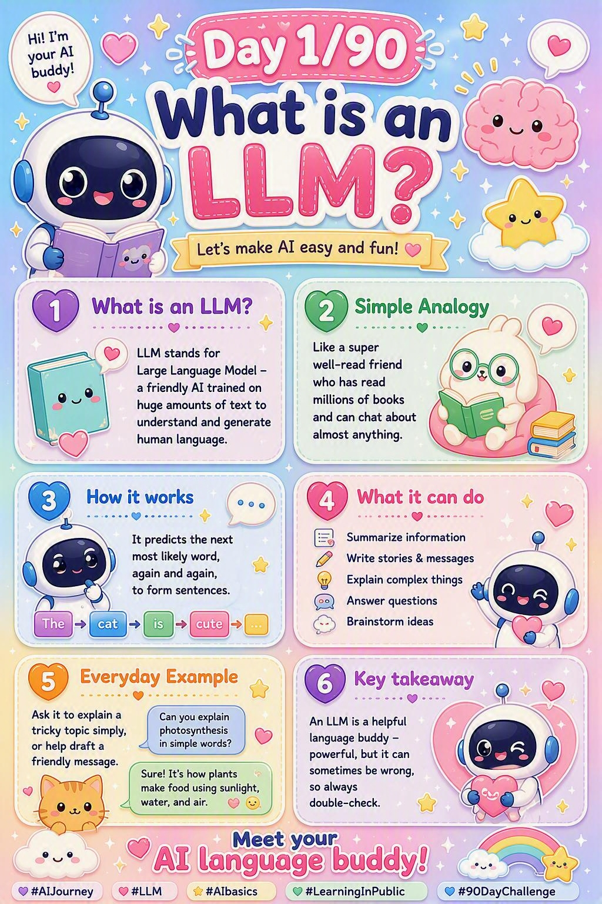

🌍 The real-world example
Imagine a friend who has read every book in a giant library — novels, textbooks, blogs, recipes, code. You start a sentence:
“The capital of France is …”
Without “knowing” facts like a database does, they instantly feel that “Paris” is the most natural next word — because they've seen that pattern thousands of times. That's an LLM. It's not looking anything up. It's predicting what word most likely comes next, one word at a time.
🔑 The core idea in one line
An LLM is a prediction machine for language. Give it some text, and it guesses the most probable next chunk of text — then repeats until the answer is complete.
- Large → trained on billions of words.
- Language → it works with text (words, code, questions).
- Model → a mathematical pattern-matcher, not a person and not a search engine.
💡 Why it matters
Everything you'll learn next — tokens, context windows, RAG, agents — is built on this one idea. If you remember “smart autocomplete that predicts the next word”, the rest of the series will click into place.
🖼️ Today's cheat sheet
The same image shared on the LinkedIn post for Note 1.
